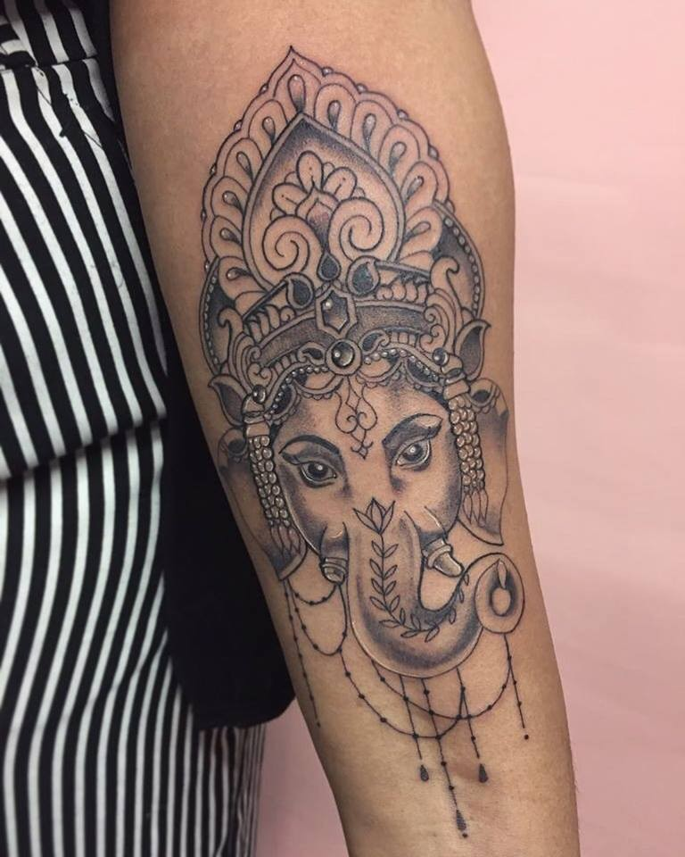
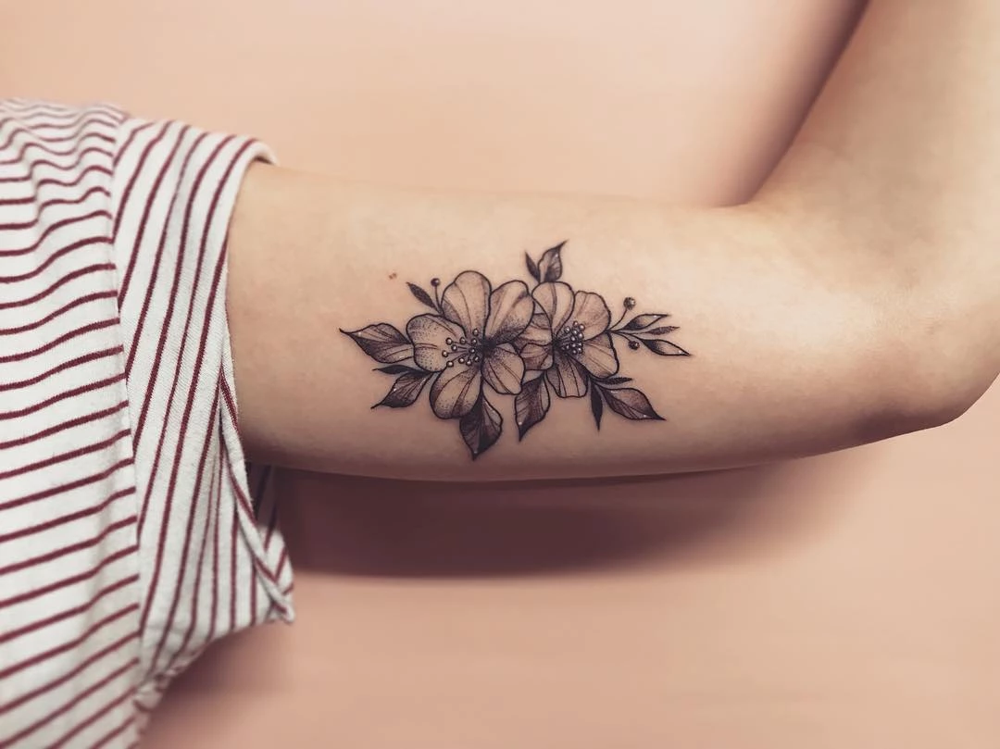
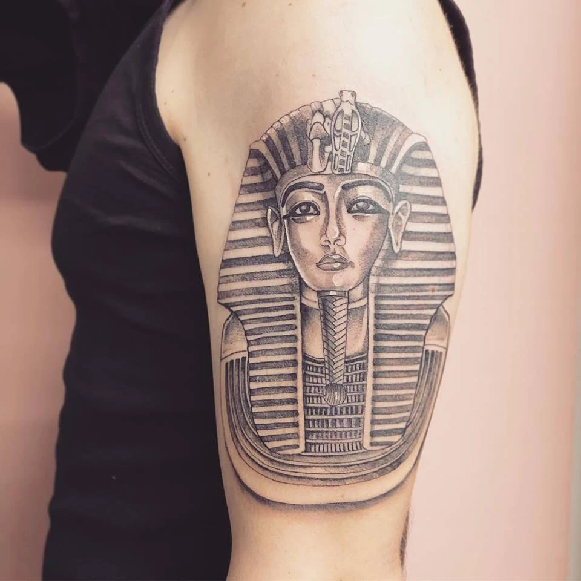
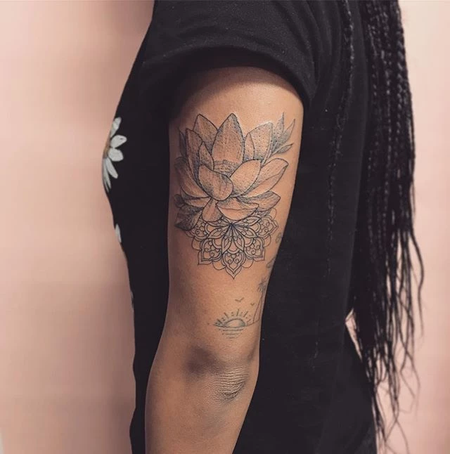
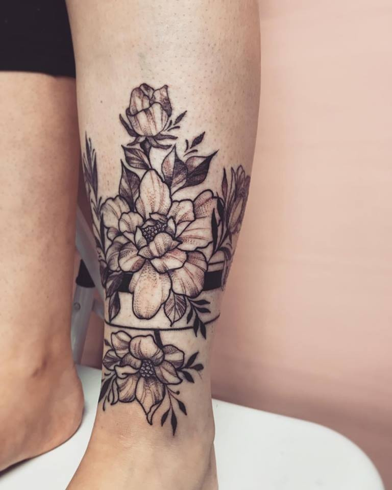
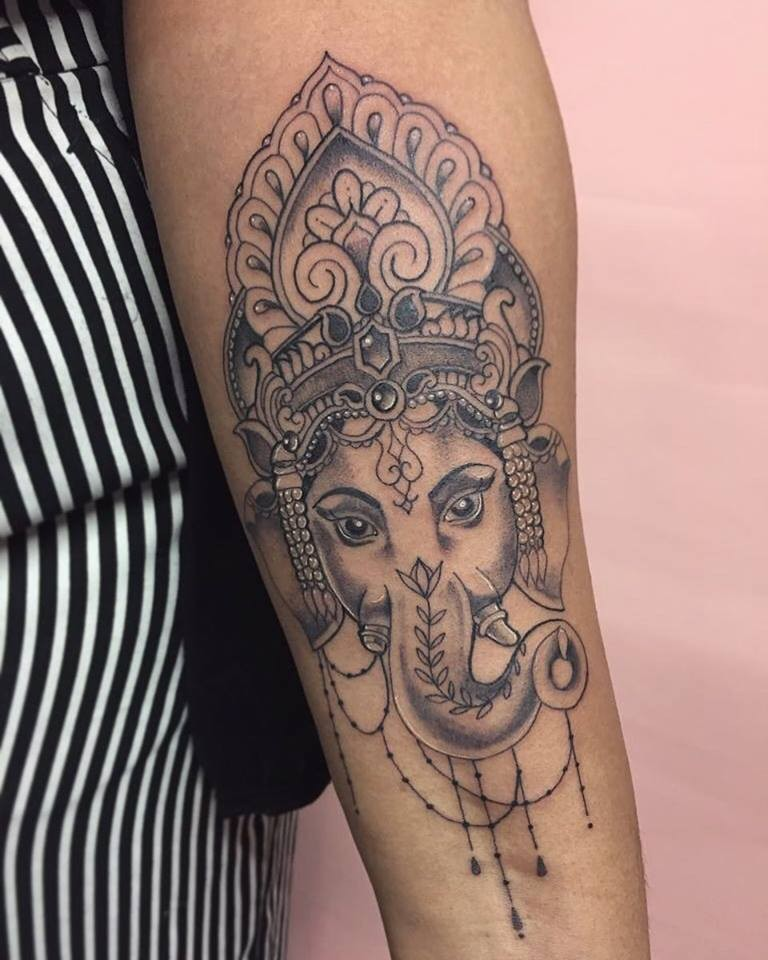
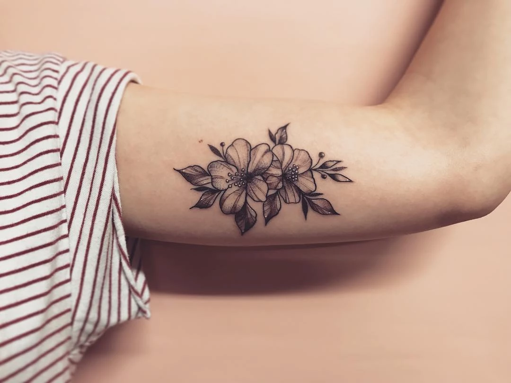
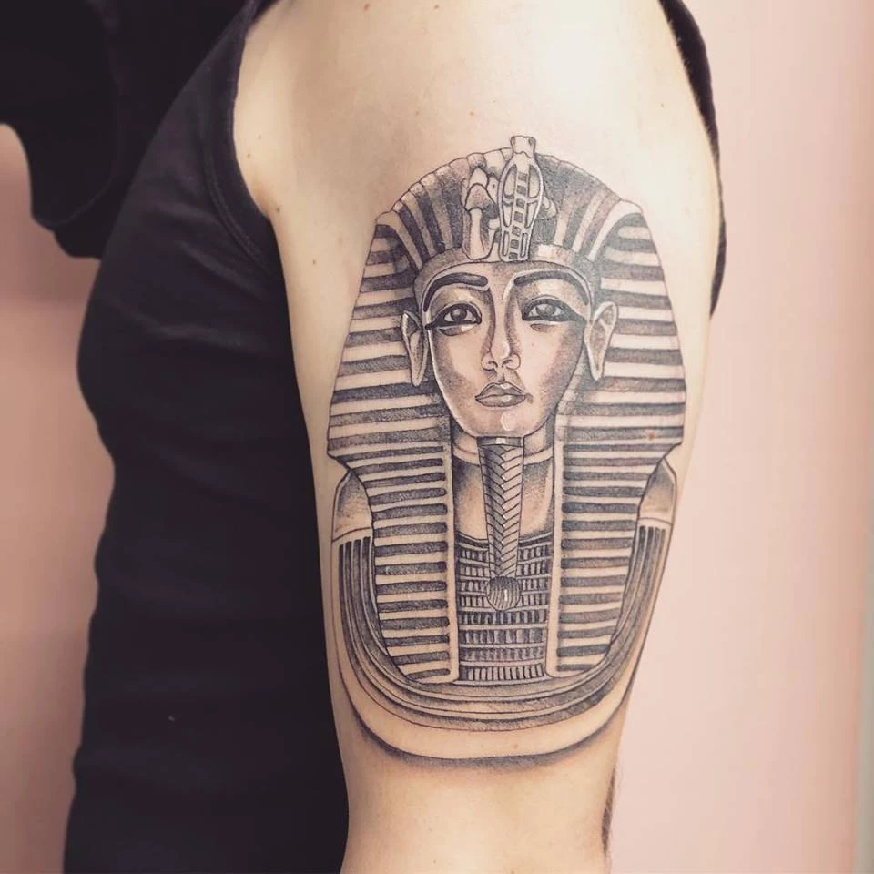
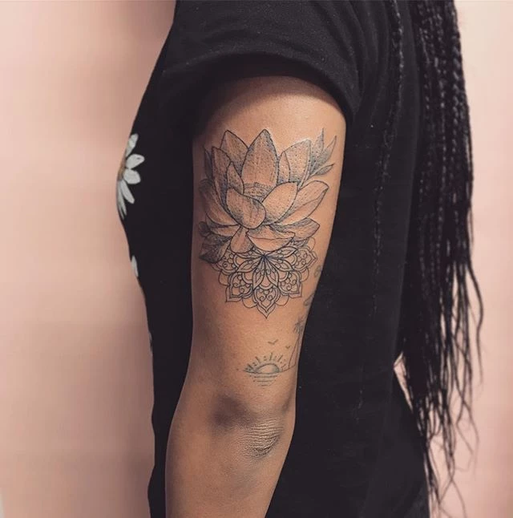
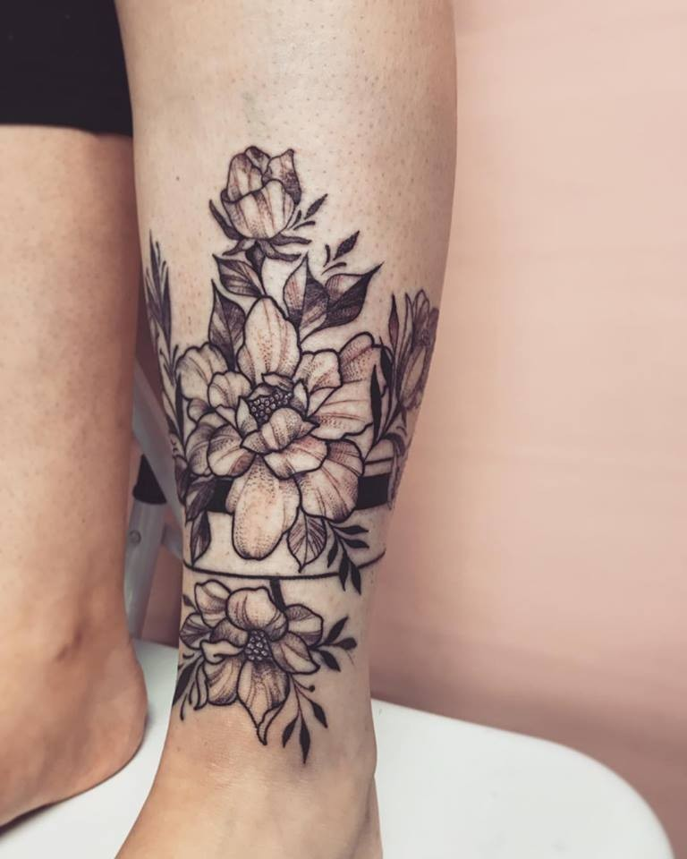

Leanne


 









Leanne as well as the owner of Delilahs Dagger Tattoo she is an artist. Beginning her career being taught by a home artist she then wanted to widen her teachings by getting an apprenticeship. She spent many years learning and practising skill of drawing, which helped her massively towards tattooing. She able to take a clients vision and create a tattoo suitable for them. She specialises in neo traditional, ornamental and dotwork. But can do a wide range of styles
br
”My aim was to open a studio that stayed true to the art of Tattoo offering the best artists in a friendly and welcoming environment that allowed the artists free expression.
I wanted to offer a wide choice without compromising quality.”